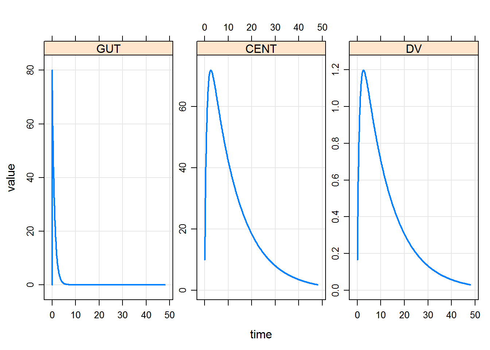

1 Sourcing models
library(mrgsolve)
#> mrgsolve: Community Edition
#> www.github.com/metrumresearchgroup/mrgsolveBy sourcing the model file, the overseer model cache is pulled in and can be used directly. Since it handles everything relative to the Rscript in which is created, rather than where it is being sourced from, no changes have to be made to how models are constructed, cached, etc.
models <- source("../models/models.R")$value
#> model dir set to C:/Users/devin/Documents/Repos/example_overseer/models
#> cache location set to C:\Users\devin\Documents\Repos\example_overseer\models\.modelcache
#> Loading model from cache.models$available()
#> [1] "mod_simple" "one_cmt_f"one_cmt_f <- models$use("one_cmt_f")
#> Loading model from cache.
one_cmt_f %>%
ev(amt = 100) %>% mrgsim %>% plot
devtools::session_info()
#> Session info -------------------------------------------------------------
#> setting value
#> version R version 3.3.2 (2016-10-31)
#> system x86_64, mingw32
#> ui RTerm
#> language (EN)
#> collate English_United States.1252
#> tz America/New_York
#> date 2017-02-06
#> Packages -----------------------------------------------------------------
#> package * version date
#> assertthat 0.1 2013-12-06
#> backports 1.0.5 2017-01-18
#> bookdown 0.2 2016-11-12
#> codetools 0.2-15 2016-10-05
#> DBI 0.5-1 2016-09-10
#> devtools 1.12.0.9000 2017-02-05
#> digest 0.6.12 2017-01-27
#> dplyr 0.5.0 2016-06-24
#> evaluate 0.10 2016-10-11
#> htmltools 0.3.5 2016-03-21
#> httpuv 1.3.3 2015-08-04
#> knitr 1.15.1 2016-11-22
#> lattice 0.20-34 2016-09-06
#> lazyeval 0.2.0 2016-06-12
#> magrittr 1.5 2014-11-22
#> memoise 1.0.0 2016-01-29
#> mime 0.5 2016-07-07
#> miniUI 0.1.1 2016-01-15
#> mrgsolve * 0.7.6.9030 2016-12-16
#> overseer * 0.0.4 2017-02-05
#> pkgbuild 0.0.0.9000 2017-02-05
#> pkgload 0.0.0.9000 2017-02-05
#> R6 2.2.0 2016-10-05
#> Rcpp 0.12.9 2017-01-14
#> RcppArmadillo 0.7.500.0.0 2016-10-22
#> rmarkdown 1.3.9002 2017-02-05
#> rprojroot 1.2 2017-01-16
#> rstudioapi 0.6 2016-06-27
#> shiny 0.14.2.9001 2017-01-10
#> stringi 1.1.2 2016-10-01
#> stringr 1.1.0 2016-08-19
#> tibble 1.2 2016-08-26
#> withr 1.0.2 2016-06-20
#> xtable 1.8-2 2016-02-05
#> yaml 2.1.14 2016-11-12
#> source
#> CRAN (R 3.3.2)
#> CRAN (R 3.3.2)
#> CRAN (R 3.3.2)
#> CRAN (R 3.3.2)
#> CRAN (R 3.3.2)
#> Github (hadley/devtools@d8ab190)
#> CRAN (R 3.3.2)
#> CRAN (R 3.3.2)
#> CRAN (R 3.3.2)
#> CRAN (R 3.3.2)
#> CRAN (R 3.3.2)
#> CRAN (R 3.3.2)
#> CRAN (R 3.3.2)
#> CRAN (R 3.3.2)
#> CRAN (R 3.3.2)
#> CRAN (R 3.3.2)
#> CRAN (R 3.3.2)
#> CRAN (R 3.3.2)
#> Github (metrumresearchgroup/mrgsolve@8028ac5)
#> Github (dpastoor/overseer@9765e80)
#> Github (r-pkgs/pkgbuild@65eace0)
#> Github (r-pkgs/pkgload@def2b10)
#> CRAN (R 3.3.2)
#> CRAN (R 3.3.2)
#> CRAN (R 3.3.2)
#> Github (rstudio/rmarkdown@c4908dc)
#> CRAN (R 3.3.2)
#> CRAN (R 3.3.2)
#> Github (rstudio/shiny@f66a766)
#> CRAN (R 3.3.2)
#> CRAN (R 3.3.2)
#> CRAN (R 3.3.2)
#> CRAN (R 3.3.2)
#> CRAN (R 3.3.2)
#> CRAN (R 3.3.2)